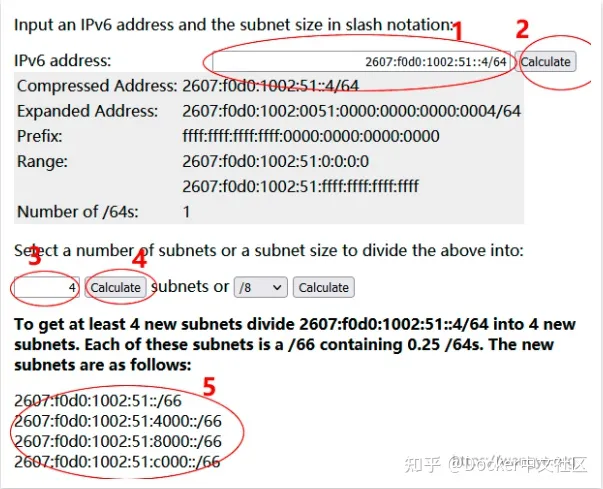

docker备忘
Ubuntu 安装
前置操作
1 | # 创建用户组 |
安装指令
1 | # Add Docker's official GPG key: |
开启 IPV6
设置 daemon.json

开启 experimental 和 ip6tables
ip6tables是指由 Docker 自动配置 IPv6 的防火墙规则
创建网络
首先获取本机 v6 地址

然后去 IPv6 Subnet Calculator 划分子网

1 | # docker-compose |
最后容器加上 network 即可
Dockerfile
1 | FROM node:18 |
- EXPOSE 是说明对外暴露的端口
- RUN 是在构建时执行的命令
- CMD 是构建完毕启动之后执行的命令
- 使用的相对地址
缓存
docker 构建镜像时会使用缓存，从上到下执行，分两次 copy 可以让构建时的工作减少
.dockerignore
copy 命令忽略的文件，.dockerignore 也要写进去
指令
docker +
build .- 在当前目录根据 Dockerfile 文件构建
images查看所有镜像image prune删除残存的，额米有使用的临时镜像文件-a删除所有没有用的镜像，而不仅仅是临时文件-f强制执行，无需弹出确定提示
tag 用户名/镜像名: 版本- 给镜像命名
rmi 镜像名- 删除镜像
- -f 强制删除
pull 镜像名- 将镜像存在本地
run- 运行镜像
-d后台运行-p 主机端口:容器端口对外暴露端口--name 自定义名自定义容器名-v 本地路径:容器文件夹路径:ro动态绑定，动态更新文件:ro代表让本地文件夹变为 readonly，使得容器文件改变，本地不改变- 这里要使用绝对路径，也可也使用环境变量
- 可以使用
nodemon实现重启npm i nodemon --save-dev- 并修改
package.json中script处，添加"dev" : "nodemon app.js" - 此时执行改为
CMD ["npm", "run", "dev"]
-v 容器文件路径表示该路径不同步
ps查看所有容器stop 容器 id- 暂停运行
- -a 暂停所有
rm -f 容器名- 删除容器
-fv同时删除 volume
exec -it 容器名 /bin/sh访问容器-i交互-t终端模式/bin/sh表示执行一个新的 bash shell
docker-compose.yml
1 | version: "3.8" |
docker-compose up -d --build执行-d后台运行--build如果镜像修改则重建
docker-compose down -v清除-v删除 volume
depends_on
condition：
serveice_started： 容器启动完成service_healthy：容器处于healthy状态，healthy状态的检查依赖healthcheckservice_completed_successfully：在启动依赖服务之前，需要确保依赖服务已经成功完成运行
1 | depends_on: # 启动顺序 |
healthcheck
有些服务未设置 healthcheck，需要自己手动添加
执行echo 'stat' | nc localhost 2181 || exit 1命令，命令返回 0 表示容器healthy，返回 1 表示unhealthy，healthy还能配置其他参数，如时间间隔、超时等，完整的配置如下
1 | healthcheck: # 自定义healthcheck |